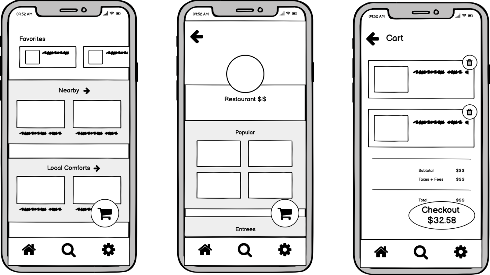
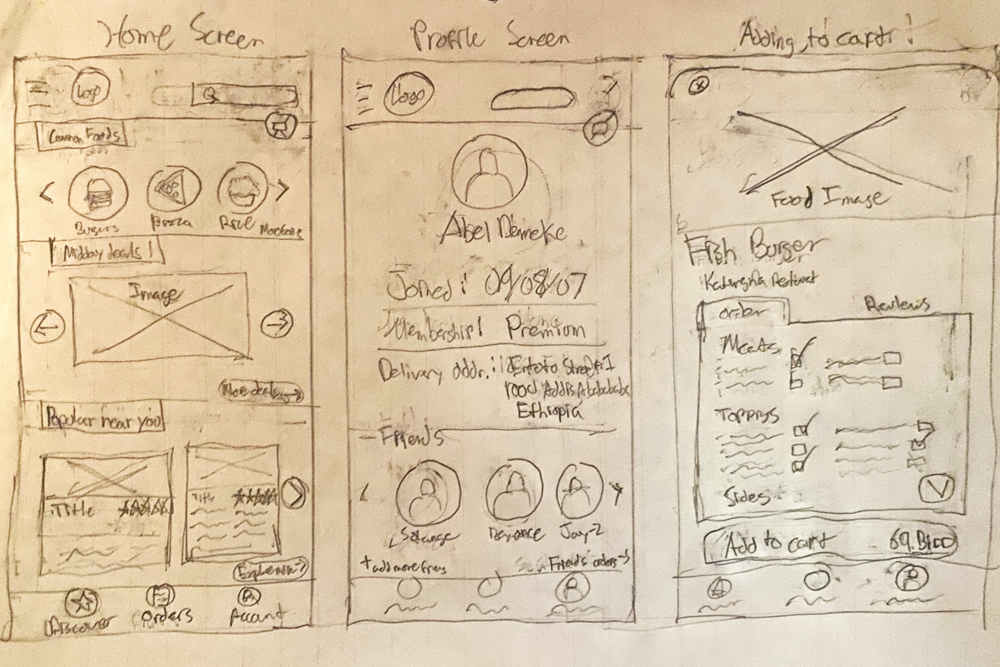
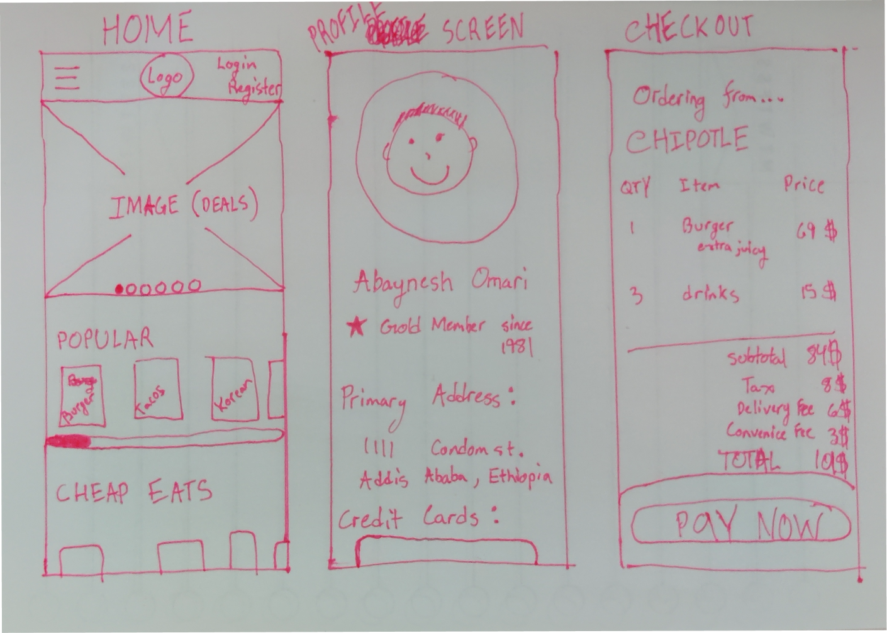
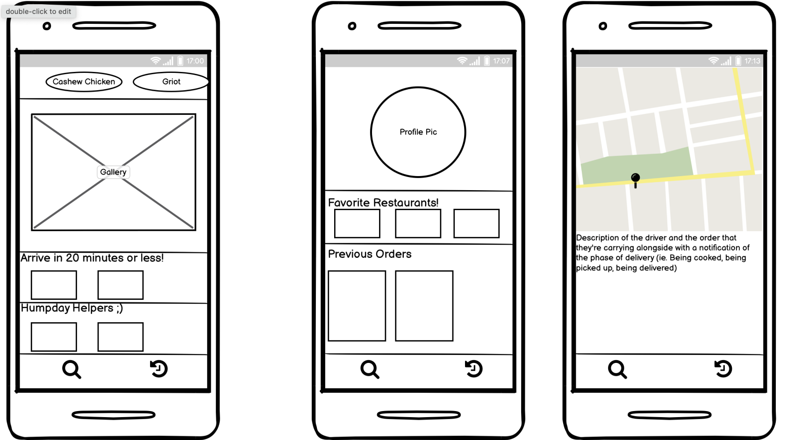
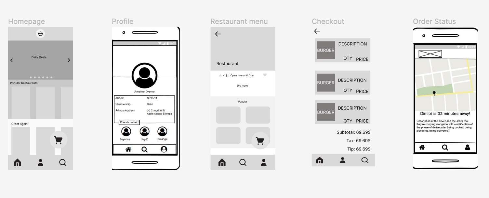

BeU delivery is an on-demand food delivery service in Africa similar
to DoorDash or UberEats. They are the #1 food delivery service in
Ethiopia, 67% cheaper than the competition, with plans to expand their
services to new markets and eventually become the super APP of Africa.
Our group is designing a mobile interface for BeU because we felt that
most users would be interacting with the application on their
phones similar to DoorDash and UberEats. Currently a majority of the
Ethiopian population lacks internet, with only 20.6%
surveyed to have consistent internet access in 2021. Furthermore mobile
devicecs occupy the primary market share in Ethiopia with the breakdown
being 63.24% Mobile, 34.29% Desktop, and 2.3% Tablet. This is why
a mobile prototype seemed the most viable option for our group.
Sketching
After reading the description of the BeU mission, we came up with a few
sketches that we thought achieved the startup's goal. Each person in our
group came up with 3 frames each.




Wireframe
After some deliberation, we picked the best aspects of all of our designs
and came up with a few wireframes to get a rough idea of our final design.

Hifi-Wireframes
First Iteration Feedback
"In the cart it would be nice to change the quantity of items numerically."
"It would be helpful to have a dropdown button to read more on the restaurant page to read the rest of the description"
"I’d put the user profile picture in the nav bar in the bottom right corner instead of the generic icon"
"There are a lot of inconsistent fonts and weights used"
After receiving critiques from our classsmates, we began iterating and improving our prototype. Above are some examples
of critiques we received that were then fixed in our current version. They allowed us to provide a more user friendly prototype
that better encapsulated what we hoped to accomplish.
User Testing Analysis and Critique
Imagine you are an office worker looking to get a quick lunch delivered to your home. Place a delivery order from Moyo's Cafe.
Take as much time as you need to explore this website. Move on to the next task when you're ready.
Think aloud as you navigate the prototype!
Browse the available restaurants that are open for delivery.
Find out how many items are currently in your cart.
Feedback
Overall...
User #3 was also appreciative of the deals being front and center on the homescreen.
For the first subtask, some mentioned how easy it was to navigate
the app and commented on how useful certain features were (time to
deliver and rows for "Popular Restaurants", "Favorite Restaurants",
"Order Again", etc.)
Most users noticed how not everything was interactable which
confused them as they tried to get to a specific restaurant page.
Many of the user testers noticed a few issues we overlooked such as missing a picture for one of our restaurants, and missing some text on another one.
They also noted how useful it would be to have a menu bar at the
top of the restaurant page to quickly navigate to the entrees section
or drinks section.
The user testers universally enjoyed the friends feature, and were excited at the future possibilities for it.
Many were saddened at the lack of ability to use a drop down to read more about a restaurants information.
They pointed out a general appreciation for all
the information on a restaurants page such as: rating, hours, and menu.